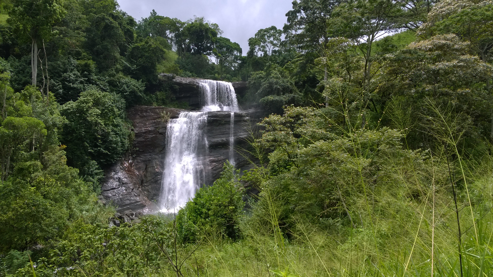
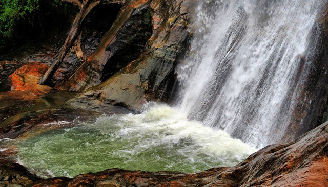

Aberdeen Falls

Aberdeen Falls is a 98 m high waterfall on the Kehelgamu Oya near Ginigathena, in the Nuwara Eliya District of Sri Lanka. Aberdeen is named after Aberdeen, the third largest city in Scotland and the capital of Aberdeenshire. Kehelgamu Oya is a major tributary of the Kelani River.
More Information-Aberdeen Falls - Wikipedia
Asupini Ella

Asupini Ella also sometimes referred to as Ahupini Ella is a waterfall which is located at Ganga Ihala Koralaya, Rakshawa in Aranayaka, Kegalle of Sabaragamuwa Province. The waterfall was named after a popular ancient fairytale story.
More Information-Asupini Ella - Wikipedia
Alakola Falls

Alakola Ella also referred to as Thaliya Wetuna Ella is a waterfall which is located in Alakola estate in the Knuckles mountain range, Matale of Central Province.
More Information-Alakola Ella - Wikipedia
Baker's Fall

Baker's Falls is a famous waterfall in Sri Lanka. It is located in the Horton Plains National Park, on a tributary of the Belihul Oya. The height of the Baker's waterfalls is 20 metres. The falls were named after British explorer and big game hunter, Sir Samuel Baker.
More Information-Baker's Falls - Wikipedia
Bambarakanda Fall

Bambarakanda Falls is the tallest waterfall in Sri Lanka. With a height of 263 m, it ranks as the 299th highest waterfall in the world. Situated in Kalupahana in the Badulla District, this waterfall is 5 km away from the A4 Highway. The waterfall was formed by Kuda Oya, which is a branch of the Walawe River.
More Information-Bambarakanda Falls - Wikipedia
Bomburu Ella

Bomburu Ella, also known as Perawella Falls, is a waterfall at Uva-Paranagama Divisional Secretariat of Sri Lanka. It is located near the border of Nuwara Eliya and Badulla districts, approximately 15 km from Welimada town.
More Information-Bomburu Ella - Wikipedia
Bopath Ella Falls

Bopath Ella is a waterfall situated in the Ratnapura District of Sri Lanka. It has a shape very similar to the leaf of the Sacred fig or "Bo" tree, which has earned it this name. The waterfall is a major tourist attraction in the country. Local myths say that it is haunted and that it hides a treasure trove.
More Information-Bopath Ella Falls - Wikipedia
Diyathiri Ella

The source of the Diyathiri Ella Fall is a tributary of the Maha Oya (river), which springs from a height of 1574m Gentry Box Mountain....
More Information-Diyathiri Ella Falls | AmazingLanka.com
Diyathiri Ella
The source of the Diyathiri Ella Fall is a tributary of the Maha Oya (river), which springs from a height of 1574m Gentry Box Mountain
More Information-Diyathiri Ella Falls | AmazingLanka.com
Devathura Falls

Devathura Falls is a waterfall in Nuwara Eliya District of Sri Lanka. The water cascades three falls and the lowest part is close to the road at the "ramboda pass", and is approximately 10 meter in height. However, the upper part of waterfall is situated little above the road and is approximately 72 feet in height.
More Information-Devathura Falls - Wikipedia
Devon Falls

Devon Falls, known as the 'Veil of the Valley', is a waterfall in Sri Lanka, situated 6 km west of Talawakele, Nuwara Eliya District on the A7 highway. The falls is named after a pioneer English coffee planter called Devon, whose plantation was situated nearby the falls.
More Information-Devon Falls - Wikipedia
Diyaluma Falls

Diyaluma Falls is 220 m high and the second highest waterfall in Sri Lanka and 361st highest waterfall in the world. It is situated 6 km away from Koslanda in Badulla District on Colombo-Badulla highway. The Falls are formed by Punagala Oya, a tributary of Kuda Oya which in turn, is a tributary of Kirindi Oya.
More Information-Diyaluma Falls - Wikipedia
Doovili Ella Falls

Doovili Ella Falls or Duvili Ella or Walawe Ganga East Falls is a waterfall in Ratnapura District, Sri Lanka. It is located in Thanjantenna village, which is about 4 km away from Balangoda. The height of the waterfalls is about 40 m...
More Information- Ella Falls - Wikipedia
Dunhinda Falls

Dunhinda Falls is a waterfall located about 5 kilometres from Badulla in the lower central hills of Sri Lanka. The waterfalls are purported to be one of the country’s most beautiful waterfalls...
More Information-Dunhinda Falls - Wikipedia
Elgin Falls

Elgin Falls is a waterfall in Sri Lanka, located in the Elgin tea estate which is 18 km from Nuwara Eliya, Sri Lanka. The waterfall is 25 m in height. Elgin Falls named after Elgin major town of Moray in Scotland. the falls is at about 1,500 m above sea level. There are several ways to access the waterfall....
More Information-Elgin Falls - Wikipedia
Gartmore Falls

Gartmore Falls are situated in the Maskeliya town of Nuwara Eliya.
More Information-Gartmore Falls - Attractions in Sri lanka
Huluganga Falls

Huluganga Falls is a waterfall located at Huluganga Town, about 30 kilometers away from Kandy Town in on the way of Bambarella, in Kandy District in Sri Lanka. Hulu River is originating from the Knuckles Mountain Range. Huluganga Falls is about 75 meters in height.....
More Information-Huluganga Falls - Wikipedia
Manawela Falls

Manawela Falls. Water falls. According to the folklore, this waterfalls and the area around it was used for bathing and as a resting place by King Rawana.. ...
More Information-Manawela Falls – Travel Uva - Ministry of Tourism | Uva ...
Puna Falls

Ramboda Waterfall: Ramboda Ella (Puna Ella) Falls - See 523 traveler reviews, 770 candid photos, and great deals for Pussellawa, Sri Lanka, at Tripadvisor.
More Information-Ramboda Ella (Puna Ella) Falls - Review of Ramboda ...
Pundalu Oya Falls

Dunsinane Falls (or Pundalu Oya Falls) (Sinhala: ඩන්සිනන් දියඇල්ල) is a waterfall in Nuwara Eliya District of Sri Lanka.
More Information-Dunsinane Falls - Wikipedia
Ramboda Falls
Ramboda Falls is 109 m high and 11th highest waterfall in Sri Lanka and 729th highest waterfall in the world. It is situated in Pussellawa area, on the A5 highway at Ramboda Pass. It formed by Panna Oya which is a tributary of Kothmale Oya. Altitude of the falls is 945 m above sea level.
More Information-Ramboda Falls - Wikipedia
Rathna Falls

Rathna Ella, at 111 meters, is the 14th highest waterfall in Sri Lanka, situated in Hasalaka, Kandy District. The area surrounding the waterfall is extremely verdant. The main occupation of the villagers in Rathna Ella is paddy cultivation...
More Information-Rathna ella - Wikipedia
Ravana Falls

Ravana Falls is a popular sightseeing attraction in Sri Lanka. It currently ranks as one of the widest falls in the country.
More Information-Ravana Falls - Wikipedia
Sera ella Falls

Sera Ella is a waterfall located in Pothatawela village, a place near Laggala in the Matale District of Sri Lanka....
More Information-Sera Ella Falls - Wikipedia
St. Clair's Falls

St. Clair's Falls is one of the widest waterfalls in Sri Lanka and is commonly known as the "Little Niagara of Sri Lanka". It is one of six waterfalls affected by the Upper Kotmale Hydropower Project....
More Information-St. Clair's Falls - Wikipedia
Surathali Falls

Surathali Falls is a 60-metre waterfall in Walhaputenna of Ratnapura District in Sri Lanka....
More Information-Surathali Falls - Wikipedia